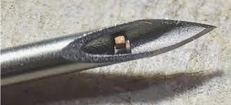
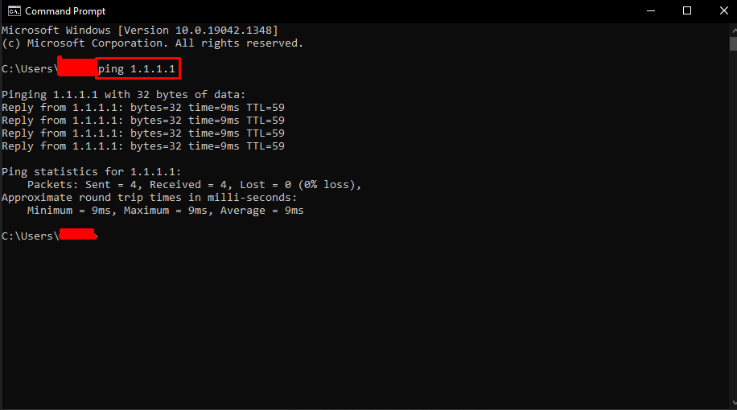

VESTI/NEWS
Welcome to the website where we uncover the truth/Добродошли на веб локацију на којој откривамо истину
Прва прича је о ковид-19 чиповима

Па пре свега шта су ови мали чипови, па то су чипови који се користе за праћење људи, добијање њихових информација и 'биолошки хаковање' на неки начин
'шта је најгора ствар која ми се може десити' па, најгора ствар која може да ти се догоди је да добију све твоје информације, "посебно ако имаш физер вакцину"
тест који можете урадити код куће дабисте видели дали сте циповани je

прво отворите апликацију која се зове CMD након тога укуцајте „ping 1.1.1.1“ ако апликација изгледа као она на слици, што значи да постоји чип у близини